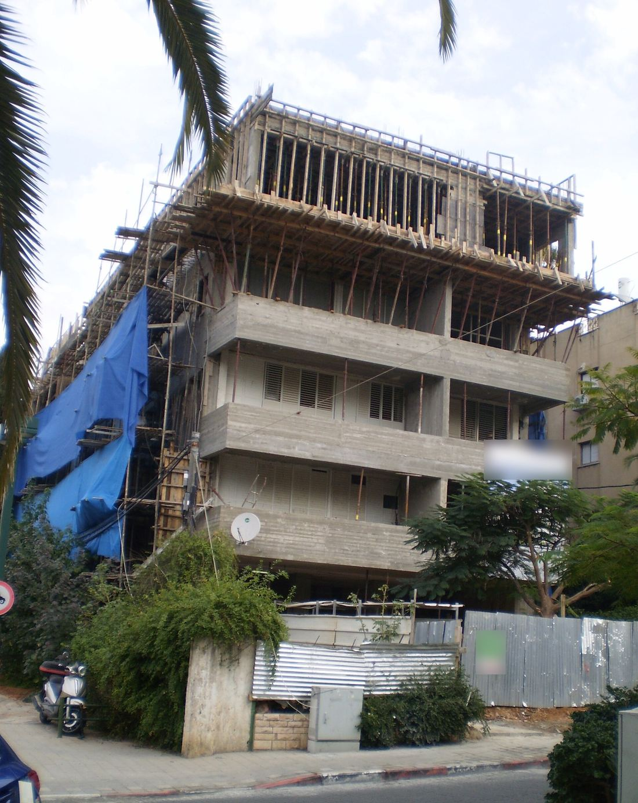
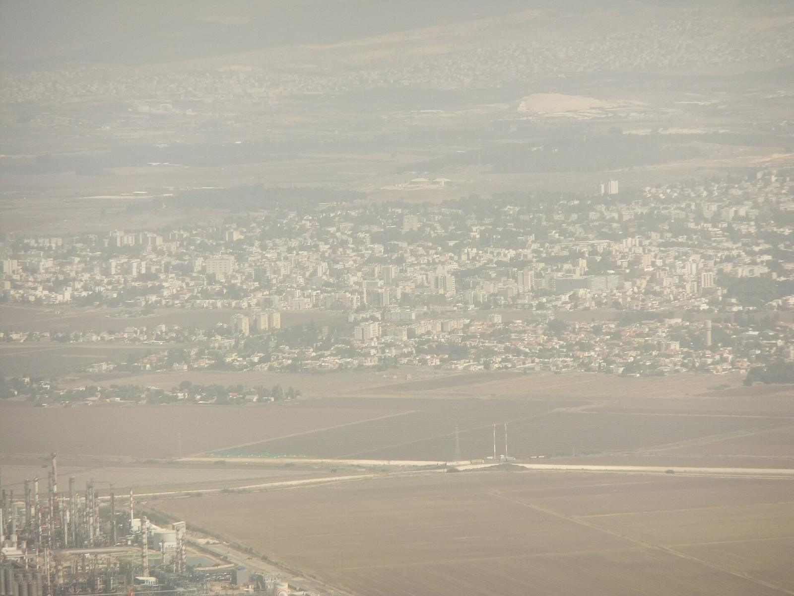

נדל״ן פרטיPrivate real estate
קנייה ומכירה של דירות.Buying and selling homes.
קונספט לדוגמה שנבנה עבור עו״ד נופר לנקרי · זה אינו האתר הרשמי של העסקA sample concept built for Adv. Nofar Lankry · This is not the business’s official website
עו״ד נופר לנקרי – נדל״ן ומקרקעין, פרטי ומסחרי, והתחדשות עירונית. זבולון 3, קריית אתא.Adv. Nofar Lankry – real estate and land law, private and commercial, and urban renewal. 3 Zevulun St, Kiryat Ata.
משרד עורכי דין בקריית אתא לנדל״ן ולמקרקעין: דירות, נכסים מסחריים והתחדשות עירונית.A Kiryat Ata law office for real estate and land: homes, commercial property and urban renewal.
״ליוותה אותי מא׳ עד ת׳״“She was with me from A to Z”
קנייה ומכירה של דירות.Buying and selling homes.
זבולון 3.3 Zevulun St.
נכסים לעסקים.Property for business.
כשהבניין מתחדש.When the building is renewed.
קרקע, זכויות ורישום.Land, rights and registration.
רכישת דירה עוברת כמה תחנות. ככה זה נראה על הנייר.Buying a home passes a few stops. This is how it looks on paper.
התחדשות עירונית, מהצד המשפטי: תמ״א 38 ופרויקטים של בניינים שמתחדשים.Urban renewal, from the legal side: TAMA 38 and buildings being renewed.

נופר ייצגה אותי בעסקה של רכישת דירה בקרית אתא באופן מקצועי, זמינה, ליוותה אותי מא׳ עד ת׳
Nofar represented me in buying an apartment in Kiryat Ata, professionally and available, and was with me from A to Z.
עברתי עם נופר תהליך של קנית דירה, חייבת לציין שקיבלתי מענה מקצועי ביותר ותמיד מתוך סבלנות ויעילות וזמינות! רוצה להודות באופן אישי לברוריה המזכירה שכל שאלה שהייתה לי תמיד הייתה שם בשבילי עם המון סבלנות
I went through buying an apartment with Nofar and must say I got a highly professional response, always with patience, efficiency and availability! I want to personally thank Bruria the secretary, who was there for every question I had, with so much patience.
נהננו מאד מהיחס והשירות של נופר לנקרי, תמיד זמינה, ועונה בנחת ובנעימות, סימפטית מאד ומקצועית היינו חוזרים שוב בודאות, תודה רבה
We really enjoyed Nofar Lankry’s attitude and service: always available, answering calmly and pleasantly, very friendly and professional. We would certainly come back. Thank you very much.
אני לא מפרגן, אני באמת אומר אם אתם רוצים שקט ורוגע פשוט תלכו לנופר מדובר בעו״ד אלופה זריזה ותותחית פשוט שווה כל שקל.
I’m not just being nice, I really mean it: if you want peace and quiet, just go to Nofar. She’s a champion lawyer, quick and brilliant, simply worth every shekel.
הקישו על המילים המודגשות כדי לשנות אותן, וההודעה מוכנה לוואטסאפ.Tap the highlighted words to change them; the message is ready for WhatsApp.
נדל״ן ומקרקעין, פרטי ומסחרי, והתחדשות עירונית.Real estate and land law, private and commercial, and urban renewal.
ברחוב זבולון 3 בקריית אתא.At 3 Zevulun Street, Kiryat Ata.
ראשון עד חמישי, 8:30–19:30. בשישי ובשבת המשרד סגור.Sunday to Thursday, 8:30–19:30. Closed on Friday and Saturday.
בוואטסאפ או בטלפון, 054-776-6020.On WhatsApp or by phone, 054-776-6020.
